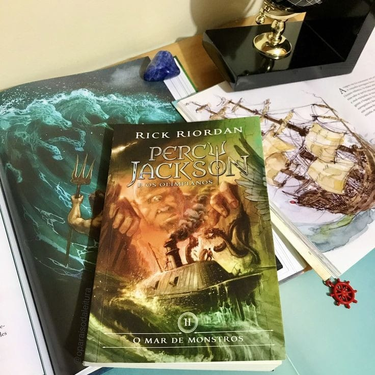

O ano de Percy Jackson foi surpreendentemente calmo. Nenhum monstro na escola, nenhum acidente esquisito, nenhuma briga em sala de aula. Mas quando um inocente jogo de queimado se transforma em uma disputa mortal contra uma tenebrosa gangue de gigantes canibais, as coisas ficam, digamos, feias.
Com a chegada inesperada da amiga Annabeth vêm outras más notícias: as fronteiras que protegem o acampamento Meio-Sangue foram envenenadas por um inimigo desconhecido e, a menos que um antídoto seja encontrado, o único porto seguro dos semideuses será destruído.
Percy terá que enfrentar desafios ainda maiores para salvar o acampamento. Com a ajuda de Annabeth e de novos aliados, ele precisa encontrar uma solução rápida para o envenenamento das fronteiras e impedir que o acampamento seja destruído. A pressão é enorme e o tempo é curto, pois cada minuto conta na luta contra a ameaça que se aproxima.